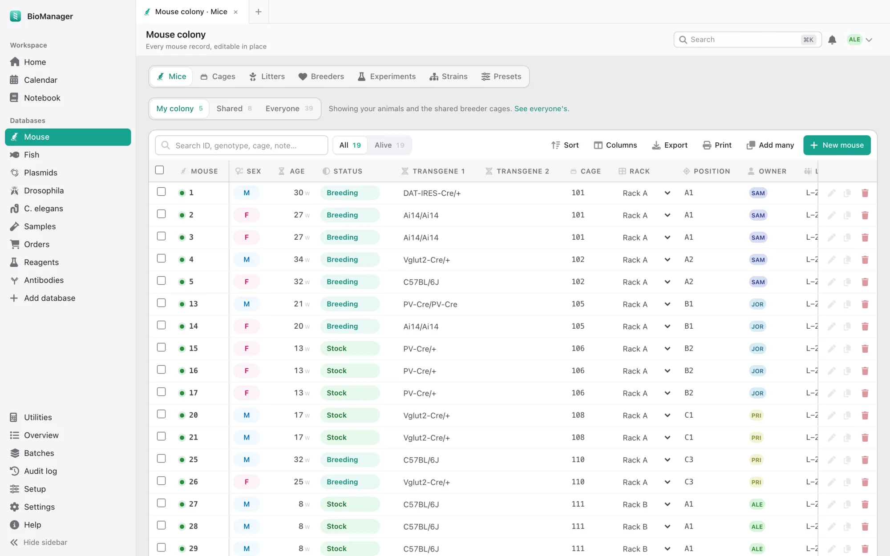

🐭 Mouse colony
Every mouse in a sheet you edit in place: sex, age, status, transgenes, cage, rack and owner. IDs are assigned in order and never reused.
- Cages with their mice, purpose, rack position and P21 weaning date
- Litters: record a birth once; weaning and genotyping dates follow
- Breeders past 30 weeks flagged, experiments with treatment groups
